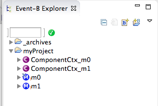

CODA Component Diagrams User Manual
Previous:
Automatic Archiving
Up:
Refactoring
Next:
Refactoring Menu: Commit and Revert
9.3 Decorator
Machines with outstanding, uncommitted changes are decorated in the Event-B Explorer (Figure
55
).

Figure 55
:
Decorator Indicating Outstanding Recorded Changes (see M0)
CODA Component Diagrams User Manual
Previous:
Automatic Archiving
Up:
Refactoring
Next:
Refactoring Menu: Commit and Revert